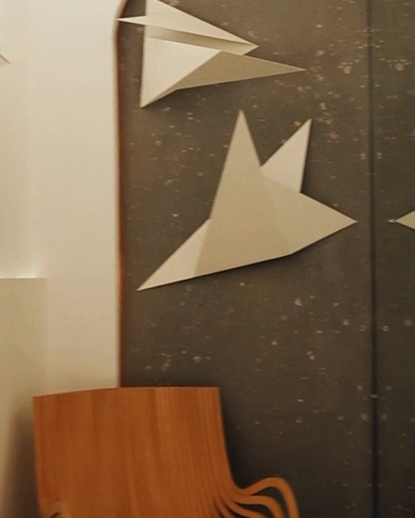
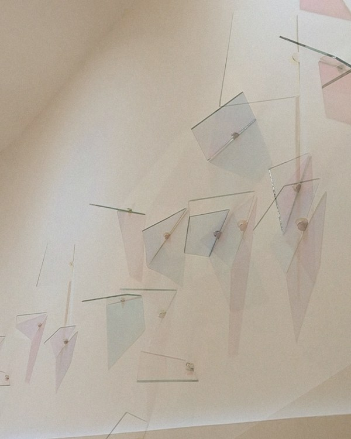
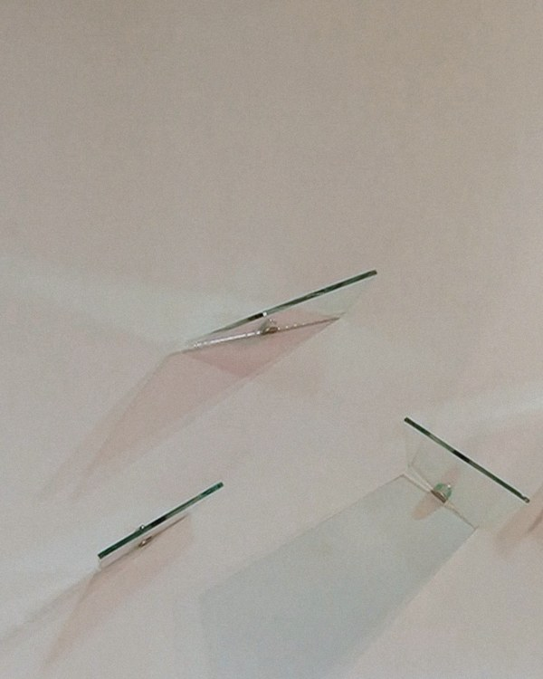

Propuesta de servicios — 2027
Fotografía arquitectónica
Fotografía arquitectónica
y documentación de obra
Preparado paraFragmento Arquitectura
Fecha23 de noviembre de 2026
Vigencia30 días
Gracias por confiar en Pórtico para documentar Fragmento. Esta propuesta presenta dos líneas de servicio para sus próximos proyectos: fotografía arquitectónica de obra terminada y documentación mensual de obra en construcción.
Para portafolio, publicaciones, concursos y redes. Cada paquete incluye una ronda de ajustes, portada para redes y archivos en alta resolución.
| Reel vertical adicional (30 s) | Q 1,500 |
| Sesión de atardecer / luz nocturna | Q 1,200 |
| Tomas con dron (por visita) | Q 800 |
| Versión horizontal de un video | Q 400 |
| Amueblado virtual (por imagen) | Q 250 |
| Ronda adicional de ajustes | Q 250 |
| Fotografía editada adicional | Q 100 c/u |
Para clientes, inversionistas, bitácora técnica y preventa. Suscripción mensual con un mínimo de 3 meses.
Las fotografías de avance se toman siempre desde los mismos puntos. Al cierre de la obra se entrega un recorrido completo de su construcción.

▶ 00:03
▶ 00:12
▶ 00:20Fotogramas del reel de 27 s · Fragmento Arquitectura · Ciudad de Guatemala · Video: Pórtico
Descuento en todos los paquetesAplica a todo lo contratado durante 2027.
Documentación de obra a 6 mesesDescuento adicional al contratar 6 meses o más.
Alianza de referidosPor cada cliente que Fragmento recomiende y contrate, una sesión Esencial sin costo.
Crédito y difusiónCada publicación de Pórtico sobre sus proyectos menciona y etiqueta a Fragmento y a sus autores.
Cuéntenos qué proyectos tienen en obra o por terminar en 2027 y armamos juntos el calendario de sesiones.